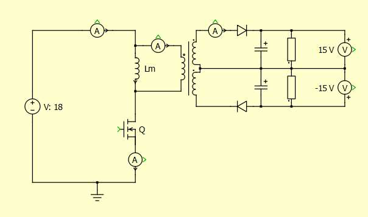
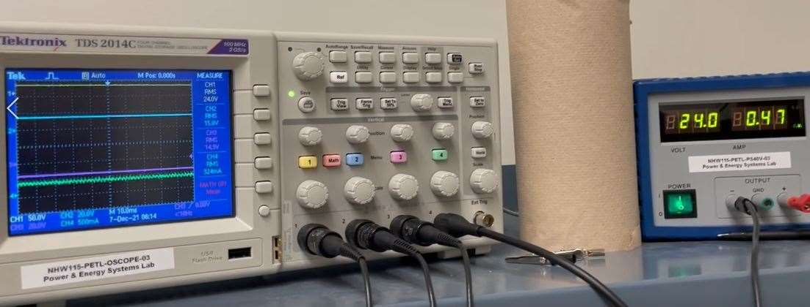

Project 1 of 5. ECEN 828 Power Electronics, Prof. Jun Wang. Term project, team of two.
A dual-output flyback converter, from the magnetics up
The problem
A flyback converter is a simple switch-mode power supply: one switch, one coupled inductor, one diode per output. The specification was an 18 to 24 V dc input converted to a ±15 V dual output within 4% tolerance, with the converter kept in discontinuous conduction and an efficiency above 80%. We loaded each output with 50 Ω. The converter followed the reference board design and its bill of materials, built around a Texas Instruments LM2587T-ADJ controller with an integrated 65 V, 5 A switch, a fixed 100 kHz oscillator, and current-mode control. The coupled inductor was ours to design, build, measure, and make work.
What we built
This was a joint project with Kashfia Tajmin Nabila; we did the calculations, the simulations, and the lab work together rather than dividing them up. From the 65 V switch rating and the 40 V rating of the output diodes we bounded the turns ratio to between 0.96 and 2.00 and chose 1.33:1:1, close to one of the two ratios Dr. Wang recommended. With 50 Ω loads, 100 kHz switching, and a design duty cycle of 0.5 against the controller's 0.6 limit, the discontinuous conduction condition put the magnetizing inductance below 35.33 µH, and we started the design at 13 µH. A Level 1 PLECS model with 0.2 µH of leakage inductance gave 15.04 V on each output at both 18 V and 24 V input, with efficiency above 80% and a duty cycle near 0.2. A Level 2 model then added the core, the air gap, and the leakage of the transformer we intended to build; at 24 V input it ran at a duty cycle of 0.256 with a peak flux density of 0.21 T, below the 0.32 T saturation limit of the core.
Then the part itself. The core was a Ferroxcube EE 25/13/7 in 3C94 ferrite. With a peak magnetizing current of 5.23 A from the simulation and a design flux density of 0.25 T, the air gap came out at 0.137 mm and the primary at about five turns; we set the gap to 0.2 mm with two layers of Kapton tape and wound the transformer with Litz wire. Three transformers were needed. The first, wound 6:4:4, measured 11.13 µH of primary inductance and 0.57 µH of leakage; its inductance was too small, and when the board was powered the bench supply went into constant-current mode and the transistor heated. The second, 8:6:6 with interleaved windings, raised the primary inductance to 12.83 µH but improved the leakage by only 0.06 µH, and its board gave only 2.6 V, then 3 V with the potentiometer; the cause was a 1.6 kΩ resistor fitted at R2 in place of 18 kΩ, and the board was damaged removing it. The third, 8:6:6 without interleaving, measured 12.22 µH of primary inductance and 0.48 µH of leakage with the secondaries shorted on an LCR meter, a coupling factor of 0.98, and on a fresh board it ran as designed.
On the bench
Qualification meant running the converter into 50 Ω per channel, two 100 Ω resistors in parallel, and holding both outputs within 4% of 15 V for three minutes at each of 18 V and 24 V input, with all signals read as RMS values on the oscilloscope for the efficiency calculation. At 18 V input the converter drew 0.64 A and delivered 15.0 V at 0.330 A on the positive output and 14.8 V at 0.324 A on the negative, an efficiency of 84.6%. At 24 V it drew 0.48 A and delivered 15.0 V at 0.331 A and 14.9 V at 0.324 A, an efficiency of 85.0%. Both outputs stayed within tolerance for the full six minutes of testing. The switching transistor was hot after the 18 V run, so we let the board cool before the 24 V test, and for the same reason we did not push the output above 15 V with the potentiometer, which allows adjustment from about 10 V to more than 15 V. The improvement we proposed is a transformer with lower leakage inductance, for higher efficiency.
| Property | Value |
|---|---|
| Input voltage | 18 to 24 V dc |
| Output | ±15 V, within 4% |
| Load | 50 Ω per channel |
| Conduction mode | Discontinuous, magnetizing inductance below 35.33 µH |
| Switching frequency | 100 kHz, fixed by the LM2587 |
| Duty cycle limit | Below 0.6 |
| Efficiency | Above 80% |
| Input | Result |
|---|---|
| 18 V, drawing 0.64 A | 15.0 V at 0.330 A and 14.8 V at 0.324 A out, 84.6% efficiency |
| 24 V, drawing 0.48 A | 15.0 V at 0.331 A and 14.9 V at 0.324 A out, 85.0% efficiency |
Mathematical background
- The boundary between continuous and discontinuous conduction, K < Kcrit(D), used to bound the magnetizing inductance
- Flyback transformer design: turns ratio from the switch and diode voltage ratings, air gap and turn count from peak magnetizing current and flux density
- Coupling factor and leakage inductance: with k = 0.98, leakage is about 4% of the primary inductance
- Litz wire and skin depth at 100 kHz



